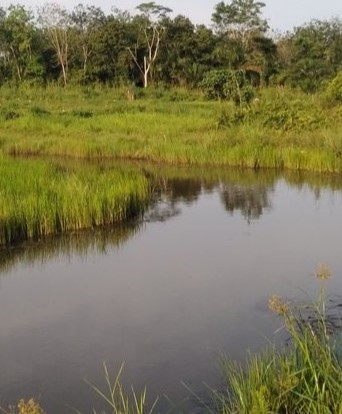

Kenali ekosistem rawa, gambut, dan hutan mangrove melalui petualangan edukatif STEM. Pelajari bagaimana sains dan teknologi mampu menjaga kelestarian air dan bumi kita bersama!
Mengapa belajar lahan basah begitu penting? Karena memadukan sains biologi, rekayasa lingkungan, teknologi pemantau, dan perhitungan matematis.
🔬
Science (Sains)
Mempelajari siklus biologi rawa, fotosintesis teratai, struktur tanah gambut anaerobik, dan adaptasi perakaran bakau.
💻
Technology (Teknologi)
Pemanfaatan sensor kualitas air digital (pH, TDS, kekeruhan) serta citra satelit pemantau deforestasi dan kelembapan tanah.
⚙️
Engineering (Teknik)
Merancang konstruksi sekat kanal pembasahan gambut (canal blocking) dan instalasi pengolahan air limbah alami (IPAL).
📐
Mathematics (Matematika)
Menghitung debit penyerapan air hujan per meter persegi, rasio biomassa karbon terikat, dan statistik laju kepunahan spesies.
📖 Pusat Pengetahuan STEM
Modul Pembelajaran Interaktif
Pilih salah satu topik di bawah untuk menjelajahi konsep ilmiah ekosistem lahan basah. Kamu juga bisa mendengarkan narator suara otomatis!
🌱
Apa Itu Lahan Basah?
Lahan basah (wetland) adalah wilayah daratan yang jenuh atau tergenang oleh air, baik secara musiman maupun permanen. Airnya bisa berasal dari curah hujan, luapan sungai, danau, ataupun pasang surut air laut.
💧Air Tawar
Sungai, rawa darat & danau
🌿Air Payau
Muara sungai & delta pesisir
🌊Air Asin
Hutan mangrove & pesisir
Karakteristik Utama Lahan Basah:
Genangan air dangkal yang menutupi permukaan tanah sepanjang atau sebagian tahun.
Kaya vegetasi hidrofit (tumbuhan yang beradaptasi dengan tanah tergenang).
Lapisan tanah hidrik yang lembek, berlumpur, atau kaya serat organik gambut.

Foto: Panorama vegetasi rawa air tawar alami
🌊
Jenis-Jenis Lahan Basah Utama
Geser kartu di bawah ini untuk melihat keunikan dari masing-masing tipe lahan basah yang ada di sekitar kita:
Tawar & Payau
Rawa (Swamp & Marsh)
Tanah luas berair yang ditumbuhi rerumputan air, purun, eceng gondok, dan pohon galam.
Kaya Karbon
Lahan Gambut (Peatland)
Terbentuk dari tumpukan sisa daun & kayu selama ribuan tahun. Sangat lembap dan menyimpan cadangan air raksasa.
Pesisir Pantai
Hutan Mangrove (Bakau)
Benteng alami pantai pemecah ombak dengan akar tunjang khas. Habitat kepiting, udang, dan burung pesisir.
Air Mengalir
Sungai & Danau Dangkal
Aliran air tawar yang tenang tempat hidup ikan air tawar, teratai, bekantan, dan jalur transportasi perahu.
💎
Manfaat Ekosistem Bagi Bumi & Kita
Lahan basah sering disebut sebagai ginjal bumi karena perannya yang krusial dalam menyaring racun dan mengatur siklus hidrologi.
🌿 Manfaat Untuk Lingkungan
Pencegah Banjir: Menyerap volume air hujan seperti spons raksasa saat debit tinggi.
Penyimpan Cadangan Air: Melepaskan air perlahan saat musim kemarau melanda.
Habitat Satwa Endemik: Rumah bagi bekantan, burung bangau, katak, reptil rawa, dan ikan air tawar.
Mitigasi Iklim: Menyerap dan mengikat karbon dioksida di dalam lapisan gambut.
👨🌾 Manfaat Untuk Kehidupan Manusia
Sumber Pangan: Perikanan air tawar (ikan gabus, lele, udang) dan pertanian sawah pasang surut.
Bahan Kerajinan: Tanaman purun diolah menjadi tikar, tas anyaman, dan produk bernilai ekonomi.
Transportasi Tradisional: Jalur perahu kelotok yang menghubungkan desa-desa pinggir sungai.
Ekowisata & Riset STEM: Laboratorium alam terbuka untuk belajar biologi, kimia, dan teknik lingkungan.
🕸️
Rantai Makanan di Lahan Basah
Ekosistem lahan basah memiliki rantai energi yang dinamis. Jika satu mata rantai terputus (misalnya karena racun limbah), seluruh keseimbangan alam akan terganggu!
CONTOH ALIRAN ENERGI DI RAWA
🌾
Produsen
Rumput Rawa / Teratai
➔
🐚
Konsumen I
Keong & Ikan Kecil
➔
🐦
Konsumen II
Burung Bangau (Bango)
➔
🦅
Predator Puncak
Elang Rawa / Ular Air
➔
🍄
Pengurai
Bakteri & Cacing Air
Pesan Kunci STEM: Pengurai mengembalikan mineral tanah dari organisme mati, yang kemudian diserap kembali oleh tanaman rawa. Siklus ini berjalan lestari tanpa limbah kimia berbahaya.
💧
Bagaimana Lahan Basah Menyaring Air?
Secara alami, lahan basah bertindak seperti instalasi pengolahan air alami (biofilter). Melalui mekanisme fisik, kimia, dan biologi, air kotor dapat dijernihkan:
🌿
1. Akar Tanaman
Menahan laju aliran air sehingga partikel kotoran mengendap, sekaligus menyerap zat hara nitrat dan fosfat.
🪨
2. Lapisan Gambut & Lumpur
Bekerja mirip karbon aktif, menjebak logam berat dan partikel tersuspensi agar air di hilir tetap bersih.
🦠
3. Mikroorganisme Biofilm
Bakteri ramah di sekitar akar merombak zat organik berlebih menjadi senyawa tidak berbahaya.
♻️
Pengelolaan Limbah Ramah Lingkungan
Meskipun lahan basah memiliki daya dukung penyaringan, sampah plastik dan deterjen dalam jumlah besar dapat meracuni seluruh ekosistem air.
⚠️ Jika Terlalu Banyak Limbah Masuk:
Kadar oksigen terlarut (DO) anjlok sehingga ikan dan udang mati lemas.
Muncul fenomena eutrofikasi (ledakan eceng gondok tak terkontrol yang menutupi sinar matahari).
Air berbau busuk dan tidak layak lagi dikonsumsi oleh warga sekitar.
✅ Solusi Cerdas yang Bisa Kita Lakukan:
Terapkan prinsip 3R (Reduce, Reuse, Recycle) di rumah dan sekolah.
Jangan buang minyak jelantah atau bahan kimia sabun ke selokan yang mengalir ke sungai.
Gunakan deterjen ramah lingkungan yang mudah terurai (biodegradable).
⚠️
Ancaman Nyata Terhadap Lahan Basah
Banyak kawasan lahan basah yang kini mengalami degradasi fungsi akibat tekanan aktivitas manusia yang tidak bertanggung jawab:
🏗️Alih Fungsi Lahan
Pengeringan rawa untuk pemukiman atau perkebunan monokultur.
🔥Kebakaran Gambut
Kanal drainase membuat gambut kering dan sangat mudah terbakar di musim kemarau.
🪓Penebangan Liar
Penebangan pohon galam dan bakau yang merusak pelindung garis pantai.
🚯Sampah Plastik
Mikroplastik mencemari rantai makanan dan mengendap di dasar lumpur.
🛡️
Aksi Nyata Kita: Ayo Jaga Bersama!
Siapa pun kamu—pelajar, guru, orang tua, atau peneliti—kita semua punya peran penting untuk menyelamatkan lahan basah:
Langkah Praktis Pelajar:
Aksi Tolak Buang Sampah di Air: Pastikan sampah selalu dibuang pada tempatnya.
Belajar & Ceritakan: Bagikan ilmu tentang lahan basah ke teman sekelas atau media sosial.
Ikut Komunitas: Bergabung dalam kegiatan penanaman bibit bakau atau susur sungai.
Buat Proyek Kreatif: Rancang kerajinan daur ulang atau miniatur filter air di menu Proyek!
🚀 Siap Menguji Pemahamanmu?
Setelah membaca modul di atas, saatnya tantang dirimu dalam Kuis 3 Tingkat atau coba langsung laboratorium simulasi kami!